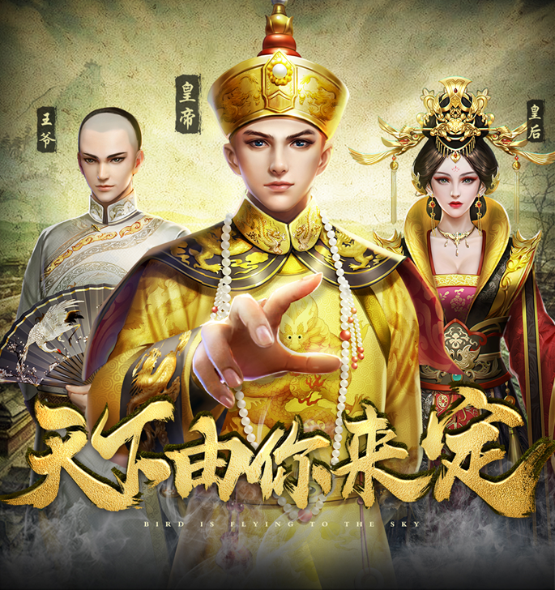
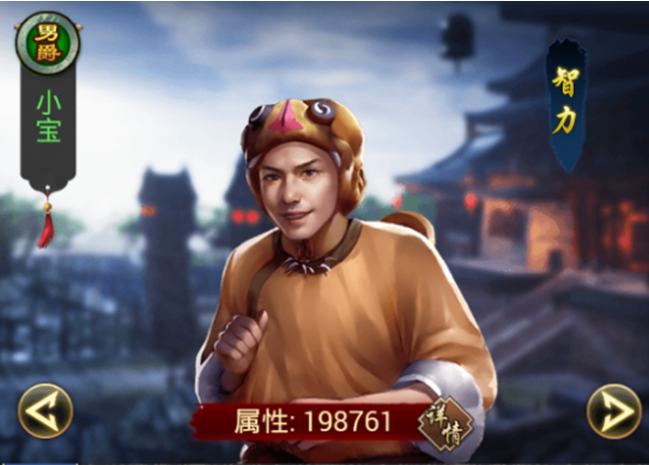

既然主题是教大家如何去更好的在游戏中 提升自己，那么我也就直接打开天窗说亮话，直奔主题了！
首先我要按时去收菜，把每日必拿的资源都先拿到手，避免前期资源浪费，在加上前期资源获取的地方也比较少，能参与的活动都尽量去参加，对于前期来说，这些资源的获得还是必不可少的，一些属性的提升帮助还是较为明显的！
比如门客不管在前期还是游戏的中期，都是有比较大的帮助，在提升门客的属性时候一定要注意几点：
1.门客的智力属性会影响经营的银两产出，门客的智力属性相对提升的越高银两的总产出也会有所提升。
2.门客的政治属性会影响经营的粮食产出，门客的政治属性相对提升的越高粮食的总产出也会有所提升。
3.门客魅力属性会影响经营的招募士兵数量，门客的魅力属性相对提升的越高粮食的总产出也会有所提升。
提升官品也是各位萌新进阶大佬的必经之路，每当你升官之后，系统还会发放门客，提高经营次数上限和寻访次数上限。那这个时候就有人会问主角的官职该如何来提升呢，那我就简单的讲解一下，官品想要升级就必须达到一定得政绩数量，那政绩得获取方法就很多种了。比如说，通过关卡，公务，每日任务，围剿蛮王等地方可以获得。
在提升的官品过程中不仅可以对自己的角色进行部分的提升，还可以获得相应的奖励和对应的资源获取上限增加，这岂不是又捡到了芝麻，又没有丢掉自己手上的西瓜，想想都觉得赚大发了，是不是啊。
那么简单的一些升官秘籍就暂且到这咯，最后别忘记了每天去排行榜，皇宫内领元宝，什么都可以忘，这个可千万别忘了！